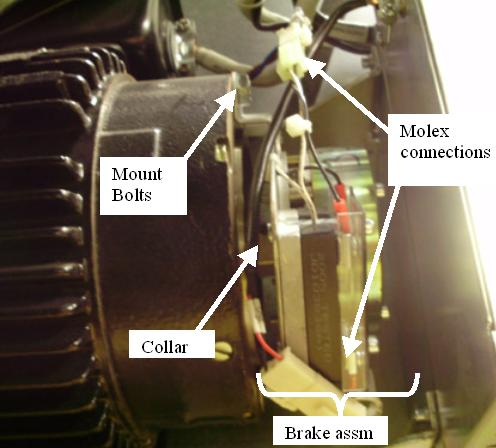
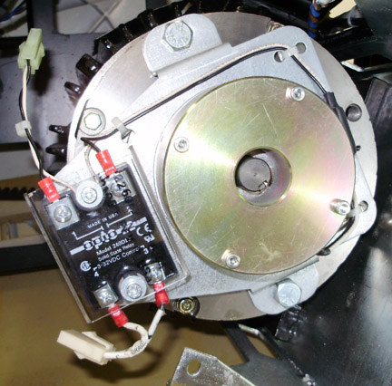

Operating Documentation
Direction 5307452-8EN, Rev# 4
Discovery CT750 HD Service Methods - Adv
Operating Documentation |
| Required Persons | Preliminary Reqs | Procedure | Finalization |
|---|---|---|---|
| 1 | Timing Not Applicable | 120 mins | 15 mins |
This procedure defines the steps necessary to replace the Axial Drive holding brake assembly.
| Last Revised: | July 6, 2008 |
| Item | Qty | Effectivity | Part# | Manufacturer | |
|---|---|---|---|---|---|
| Standard FE Tool Kit | 1 | - | - | - | |
| 14mm socket, 6-12 inch extension | 1 | - | - | - | |
| FE torque wrench kit | 1 | - | - | - | |
| Item | Qty | Effectivity | Part# | Manufacturer |
|---|---|---|---|---|
| Tie-wraps | - | - | - | |
| Hand towels (for cleanup) | - | - | - |
| Item | Qty | Effectivity | Part# | Manufacturer | |
|---|---|---|---|---|---|
| Axial Drive Holding Brake (See IPL) | 1 | - | - | - | |
| ELECTROCUTION HAZARD | |
| HIGH VOLTAGES PRESENT. | |
| Use proper lockout/tagout procedures before replacing components. See safety menu of Service Document gui for appropriate procedures. |
| CRUSH HAZARD. | |
| UNEXPECTED GANTRY ROTATION CAN CAUSE SERIOUS INJURY. | |
| Never service the gantry with the axial drive enabled. Use the gantry rotation lock to lock out gantry rotation. |
| Follow ALL required safety and PPE procedures customary for your organization, when working on this product. | |
| Condition | Reference | Eff |
|---|---|---|
Only trained service personnel should service the GE CT Scanner. | - | - |
Move the table to the home position.
Remove gantry right side cover.
Refer to Replacement → Gantry → Enclosure → (Cover Removal Procedures).
Turn OFF the Axial Drive and HVDC switches on the gantry’s Service Switch Panel.
Rotate the tube to the 6 o'clock position.
Turn OFF the 120 VAC switch on the gantry’s Service Switch Panel.
Remove the gantry left side cover, top covers and front and rear covers.
| ELECTROCUTION HAZARD | |
| HIGH VOLTAGES PRESENT. | |
| Use proper lockout/tagout procedures before replacing components. See safety menu of Service Document gui for appropriate procedures. |
Perform all required LOTO activities to remove all power from the gantry.
| CRUSH HAZARD. | |
| UNEXPECTED GANTRY ROTATION CAN CAUSE SERIOUS INJURY. | |
| Never service the gantry with the axial drive enabled. Use the gantry rotation lock to lock out gantry rotation. |
Engage indexer lock to prevent unexpected gantry rotation.
Remove the gantry tilting frame safety side panel next to the Axial Drive components (5 screws, 5 mm hex wrench).
Disconnect 2 MOLEX connections to holding brake relay.
Illustration 1: Axial Holding Brake Assembly

Remove the Axial Drive Module using the Axial Drive Module Replacement for instructions. This will provide easier access to the brake module.
| NOTE: | You may not need to disconnect the cabling to the Axial Drive Module if you shift it up from its current position after removing the mounting screws and fasten it to the gantry frame for safety and to keep it out of the way. |
Remove the 2 bolts that secure BRAKE motor to MOTOR.
Illustration 2: Axial Holding brake

Slide assembly off shaft.
The new brake assembly comes with a new collar. If any damage or wear is seen on the existing collar, replace it using the following steps.
Remove the collar by loosening set screw and sliding the collar off the motor shaft.
Remove the new collar from the new brake assembly and slide it onto the shaft. Loosen the set screw if necessary.
Collar must be positioned 4 mm from the Motor Assembly. Position the collar on the shaft such that a 4 mm hex wrench is snug between the collar and the motor assembly. See Illustration 3. The spacing is from the flat sides of the hex wrench, not the corners so the gap is no more than 4 mm.
Illustration 3: Collar to motor spacing

Leave the 4 mm hex wrench in place when tightening the set screw to maintain spacing.
Tighten the set screw to the following torque value:
Table 1: Set screw torque
| 4.5 N-m | 3.5 lb-ft | 40 lb-in | 46 kg-cm |
Install new brake and torque the mounting screws to the following Torque value:
Table 2: Mounting screw torque
| 34 N-m | 25 lb-ft | 300 lb-in | 344 kg-cm |
Install the Axial Drive module using the Axial Drive Module Replacement. instructions.
Reinstall the gantry tilting frame safety side cover using the 5 screws and a 5 mm hex wrench.
Disengage the indexer lock to allow the gantry to rotate.
Install the front, rear, top and left side gantry covers.
Refer to Replacement → Gantry → Enclosure → (Cover Removal Procedures).
Remove LOTO lock(s) and restore power to system.
Enable 120 VAC HVDC and Axial Drive service switches from the service switch panel. Press the table drives enable button on the lower right corner of the service switch panel.
| CRUSH HAZARD. | |
| UNEXPECTED GANTRY ROTATION CAN CAUSE SERIOUS INJURY. | |
| Never service the gantry with the axial drive enabled. Do not touch the rotating assembly with the axial drive enabled. |
Perform the following Axial Brake Check.
Toggle the axial drive enable switch on the Service Switch Panel. Listen to the brake; it should energize and de-energize.
| NOTE: | The brake may not toggle if the system underwent a hardware reset since the last time you turned on gantry AC power. If the brake doesn’t toggle, use the 120 VAC enable switch to turn gantry 120 VAC power off, then on. Then toggle the axial drive enable switch. You should now hear the brake as it energizes and de-energizes. |
Make sure:
When you turn off the axial drive enable, the brake releases. (You can easily rotate the Gantry by hand.)
When you turn on the axial drive enable switch, the brake energizes and the gantry stops any rotation previously started by hand.
Make sure Axial Drive, 120 VAC and HVDC service switches are on then, install the gantry right side cover.